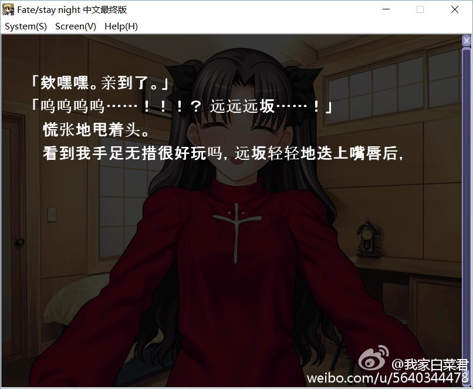
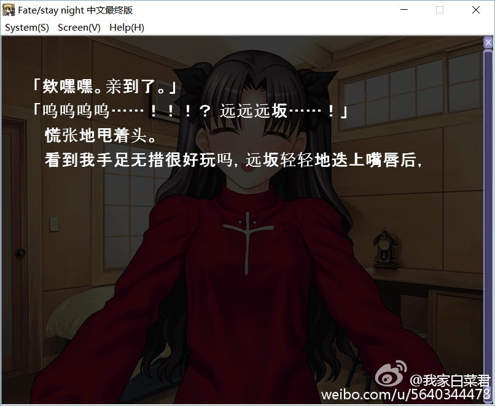
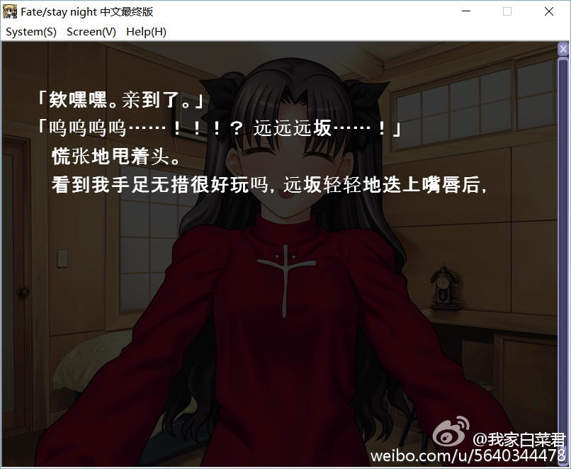

最近整理以前写的东东发现了这个文章，是对《Fate / Stay Night [Unlimited Blade Works]》的评论和感想，很零碎，周日无聊就对其做了删改和电子化，并发出来～
Fate系列可以说是我在大学时重新入坑日漫的一个契机，当然我最初重新开始看日漫是因为《无头骑士异闻录》，看完后便找到了《Fate / Zero》，并决定先看一看《Fate / Stay Night》，依此契机发现了宏大的型月世界。而型月世界的本源——《魔法使之夜》，在90年代仍然顽强生活前进的主角三人团，又把我引向了EVA的世界。在受EVA艺术风格震撼之余，我也明白了特摄对人的影响力，并重新做回了那个在初中决定脱坑的特摄迷。
未来重新发现过去，这也是《Fate / Stay Night [Unlimited Blade Works]》的主题之一。女主角远坂凛，独立坚强，积极活跃在Fate 的各个故事线里，其在《Fate / Grand Order》中的化身，来自美索不达米亚的金星女神——伊什塔尔，也活跃在多个古代民族的神话故事里。以现代视角重构古代神话，这也是Fate 系列吸引读者的地方。
另外，型月世界是我很喜欢的现代神话之一，我觉得其和托尔金在《魔戒》、《精灵宝钻》里构建的中土世界一样迷人且丰富。不过型月世界观下的故事，很少有宏大叙事，更关注于这个世界观下现代生活的种种切面，Fate系列说的是历史神话，月姬则是吸血鬼世界，空之境界描绘了一则则都市奇闻，魔法师之夜是带着乡愁的怀旧诗……我都很喜欢！
接下来的文字很杂乱，沾上了很多情绪，请见谅🙏
最近一段时间，我看了一部日漫《Fate / Stay Night [Unlimited Blade Works]》。没错，这名字一看就让人一丝狗血中二，看完了甚至觉得剧情上都是槽点——除了打斗比较酷炫以外可能没其它优点了。但我依然想试着谈一谈这个让我感到美丽温馨的故事。
我近十年看的都是欧美的电影，电视剧（注：此文写于2016年春）。我认为与日漫，或着说东方的这些商业作品相比，欧美的更加写实，相比之下，我们这边的作品总有些不严谨。比如日漫里总会有男主角被人打得死透了，结果巅来倒去，能力爆发反杀发派。我最讨厌这种剧情，感觉是作者写不下去了为了让主角有光环，临时挖的一个坑（后来我学到了概括这种剧情的一个词语：“唯心主义”；也知道了作者不讨好读者会引发多大的风波，比如《进击的巨人》，我还很惊讶的是身边批判巨人结局的人竟然都没看过结局）。
这种创作一来显得不严谨，二来也是显得主创脑力不够。鲜明对比的是诺兰的《黑暗骑士》的结局，抓到了小丑又能如何？哥谭市已经被小丑炸烂了，市民们人心惶惶。哈维登特——所谓的“光明骑士”，被小丑逼疯，用硬币做判官，自己成了刽子手“双面人”。戈登警长感到绝望，哥谭市没救了。蝙蝠侠说不行，我来担着哈维的罪名，我们要骗过大家，不让大家绝望。警长答应了，影片最后，蝙蝠使被警犬追着骑上摩托车，跑走了。
人生到头来，不都是悲剧吗？日漫（大多数）总是在追求着Happy Ending，告诉大家只要相信，梦想终会实现的，世界最终还是在你们孩子手里的。以前的我是极其恶心这种套路的，说白了这些漫画都是在骗小孩子。恶人有好报才更现实吧！就像《纸牌屋》的木下夫妇靠着利益维护婚姻，这不是比那些所谓的爱情牢固多了！因此，我有段时间甚至连爱情都不大相信，难免有些消极了。（后来我才明白，爱情带来的温馨和生命力，远比速朽的利益更加稳固）
但是人总是要做梦的吧？人生最终的归宿不过是死亡，开始和与结局都是一样的空洞。因此才需要给过程附加意义，说是要好好享受过程，只不过是因为贪生怕死，给自己一些安慰。
说了这么多，这与主题何干？正因为现实对我们是如此贫瘠，我们才需要用想象重构一个世界。类似《黑暗骑士》的结局，英雄只能用欺骗去掩盖凄凉的底色，这是因为英雄有着无法靠自我愈合的创伤，所以他也迫切地需要去相信世界依然美好。
若没有追求浪漫的勇气，人又要如何活在贫瘠的现实里呢？
蔓延整个城市的大火，一个人救下了主角卫宫士郎，两人就生活在了一起，救下主角的人也成为了主角的养父。某日，养父突然对士郎说：“我很小的时候，就一直梦想着成为正义的伙伴，但自己没有意识到，做英雄是有期限的，长大了，就没有这个梦想了”。少年接过了这句话：“我还是个孩子，就让我替你实现这个梦想吧”。养父笑了笑，说自己安心了，睡去，没有醒来。
因为养父是自己的救命思人，因为那场火灾无他人得救，种种原因，少年抱着这个连自己都觉得幼稚的的想法继续生活：我要成为正义的伙伴，我要让所有人都幸福。强迫自己不去拒绝他人的求助，强迫自己处处行善，变成了一个畸形的人。直到一个夜里——命运降临之夜。
之后又是一个很长的故事了，女主角远坂凛在那个夜里不忍心少年死去，用掉了一个藏有10年魔力的宝石将其复活。少年从血泊中醒来，从此一直保存着那块宝石。远坂凛的使魔Archer 在当晚回家后，拿出了一模一样的宝石，说虽然宝石魔力已耗尽，但毕完是女主父亲的遗物，应当好好保存。故事不断发展，某日凛突然识到自己的使魔，就是未来的少年。或者说是少年的理想，那个正义的使者。
故事的焦点就此展开——就是Archer与士郎两人不可调和的矛盾。士郎想要所有人幸福，不愿意在必要时刻做出牺牲。而Archer在未来无尽的岁月里早已明白“正义的使者”是个虚伪的理想，为了救更多的人，难免要去牺牲少部分人。
Archer怒斥士郎的想法是如此幼稚，最后和灵长类抑制力签订契约，自己走上了守护者的不归路，为了自己的救人的理想，次次把自己扔进需要杀戮才能解决问题的局面。Archer为了实现理想而成为守护者，的确达到了自己能拥有能力的极限，但他的代价是失去了选择。
成为守护者，就得服从抑制力的安排，不断前往各个人类可能灭亡的时间点，杀死抑制力想要抹除的人，保证人类的延续。可这样精密计算的“正义”失去了感性上的意义，更像是一种“必要之恶”。正义使者所行之处，就是地狱。
作品的名字中带着Fate，故事则是各种宿命的纠缠。凛救了士郎，士郎才能成为守护者，并以英灵的方式成为了凛的使魔Archer。Archer和士郎的矛盾，让士郎得到锻炼并成长，最后Archer也找到了救赎。理不清的因果线，也是我喜欢这部作品的原因。
“正义的伙伴”就像是大家儿时的理想，小时候人们常有着翻天覆地的理想，可长大后却也嘲笑自己当年的幼稚想法。若能像Archer一样回到过去，遇见曾经的自己，会不会改变自己的想法，坚定实现那些幼稚理想的信念呢？
我也渐渐明白，世间有这么多剧情不合理的故事，也因为故事的最初动力改变或者弥补现实。让人做梦，也是故事的意义，剧情严谨，写实性强的故事让人喜欢，但剧情任性，充满浪漫的故事也是不可缺乏的。这类故事有着被创造和创造的资格，在现实的乏味里顽强生长。好比短暂人生中充满幼稚幻想的那个阶段，正是生命里的闪光岁月。
我的《Fate / Stay Night》游戏截图
